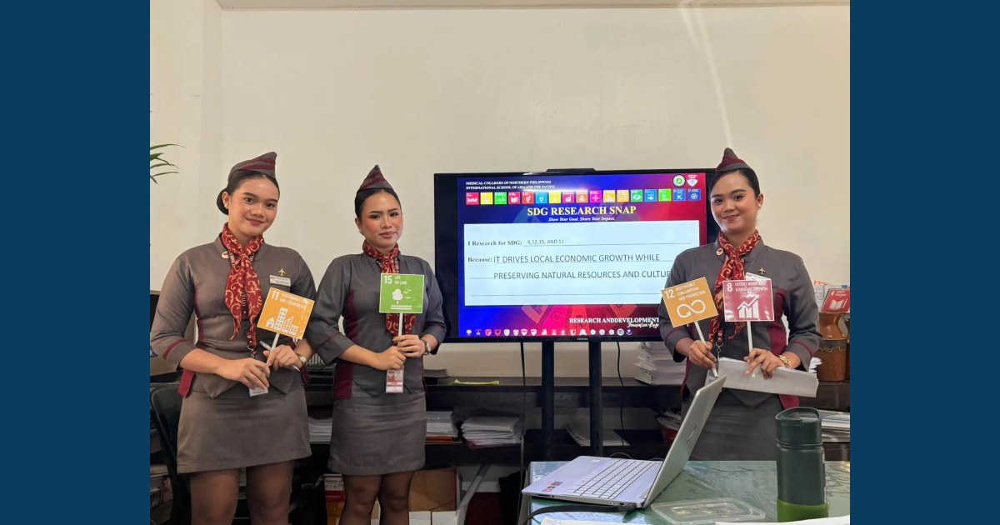

ISAP Tourism Management Students Demonstrate Research Excellence Through Final Defense

ISAP conducted the Bachelor of Science in Tourism Management Final Research Defense on November 3, 4, and 5, 2026, providing tourism students with an academic platform to present and defend completed research studies.
Read full article